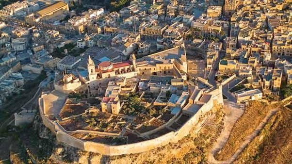
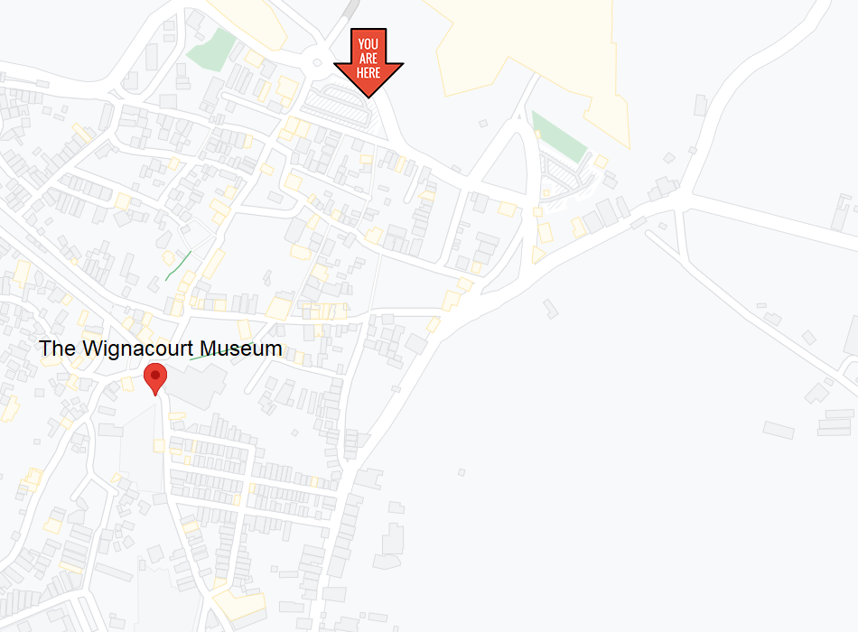
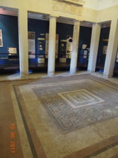
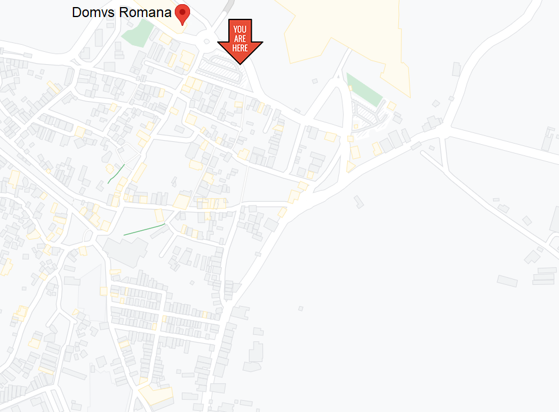
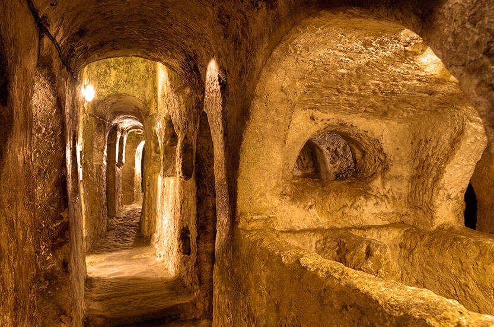
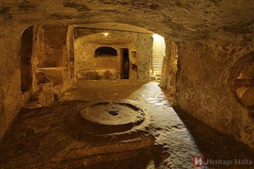
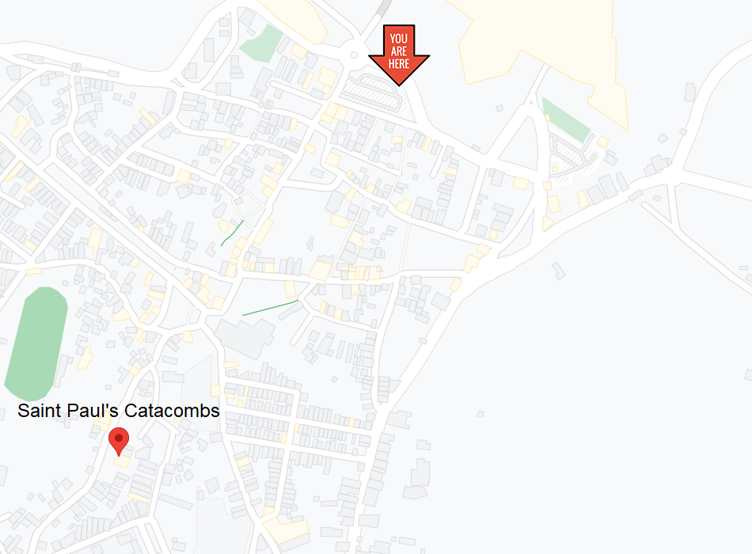
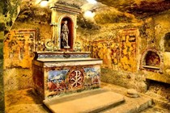
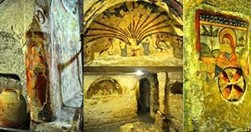

Jinsabu fir-reġjun tal-punent-ċentru ta’ Malta, ir-Rabat huwa wieħed mill-ibliet l-aktar storikament importanti li wieħed jista’ jsib f’Malta.
L-ewwel u qabel kollox, ir-Rabat huwa meqjus minn ħafna bħala l-post fejn twieled il-Kristjaneżmu f’Malta. Ir-raġuni għal dan hija li, ħafna jemmnu li r-Rabat kien il-post ta’ residenza ta’ San Pawl matul iż-żjara tiegħu ta’ tliet xhur f’Malta (fejn il-post speċifiku li qagħad, huwa magħruf bħala ‘Grotta ta’ San Pawl, li hija disponibbli għall-pubbliku ġenerali biex iżuru llum il-ġurnata. ). Biex ma nsemmux li r-Rabat fih numru ta’ katakombi (inkluż il-Katakombi ta’ San Pawl u l-Katakombi ta’ Sant’Agata), li nbnew fi żmien il-kontroll tal-Italja fuq Malta.
Malta kienet ukoll taħt il-kontroll tal-Għarab għal aktar minn 200 sena (mit-870 WK sal-1090 WK). Dan kien evidenti b’mod speċjali fil-każ tar-Rabat minħabba l-fatt li r-Rabat għadda minn espansjoni fl-art, riżultat li l-belt ġirien tagħha l-Imdina tnaqqas il-ħitan tagħha.

Fil-ġurnata u l-età tal-lum, b’aktar minn ħdax-il elf ruħ jgħixu fir-Rabat, din il-belt hija aktar minn sempliċi rakkont storiku, iżda għandha ħafna affarijiet x’tagħmel u tesplora!
Mużewijiet
Katakombi
Wignacourt Museum
Il-Mużew ta’ Wignacourt qabel kien iservi ta’ abitazzjoni għall-membri tal-kleru li jappartjenu lill-ordni ta’ San Ġwann. Il-bini innifsu nbena fis-seklu tmintax, l-arkitettura tagħha tieħu ispirazzjoni kbira mill-era barokka.
Imsemmi għall-Gran Mastru Alof de Wignacourt (li ħakmu fuq Malta mill-1601 sal-1622 A.D), il-mużew huwa maqsum fi tliet livelli.
Il-livell ta’ taħt l-art huwa ta’ interess kbir għal ħafna minħabba l-importanza storika tiegħu matul iż-żminijiet. L-ewwel nett, dan il-livell huwa konness mal-Grotta ta’ San Pawl, li hija fejn kien jgħix San Pawl stess waqt iż-żjara tiegħu f’Malta (60 A.D). It-tieni, l-ipoġea fi ħdanha (li kienu ta’ natura Punika, Rumana u Nisranija) intużaw bħala xelters għall-attakki bl-ajru matul it-Tieni Gwerra Dinjija.
Is-sular ta’ taħt jikkonsisti f’xi kollezzjonijiet minuri, kif ukoll ġnien grandjuż li darba kellu ġewwa fih is-sala tal-ikel tal-membri tal-kleru.
L-ewwel sular huwa l-ispazju ewlieni tal-wirjiet, fejn wieħed jista’ jsib numru ta’ pitturi magħmula minn artisti Ewropej u Maltin (bħal Mattia Preti u Antoine Favray), kif ukoll kollezzjoni ta’ Silver Spanjol, Taljan, u Maltin li jvarjaw mis-sbatax. sa seklu dsatax.

Domus Romana
Id-Domus Romana (jew Domvs Romana) kienet oriġinarjament townhouse ta’ stil Ruman għal nobbli Ruman. Ir-residenza nfisha nbniet fl-ewwel seklu QK, u baqgħet tintuża sat-tieni seklu AD (madwar 300 sena).
Madankollu, l-affarijiet ħadu l-agħar għad-dar Rumana. Dan kien dovut l-aktar għall-fatt li matul is-seklu ħdax, fl-istess post twaqqaf ċimiterju Musulman fejn kien hemm il-fdalijiet tad-residenza Rumana.
Bħala riżultat, l-iskoperta mill-ġdid tad-Domus Romana fl-1881 ma tatx ħafna artifatti. Fil-fatt, l-attrazzjoni ewlenija minn dawn il-fdalijiet kienu l-mużajk ta’ stil Ellenistiku li kienu jintużaw għat-tiżjin u biex juru xeni mitoloġiċi. Oġġetti oħra li nħarġu għad-dawl kienu jinkludu muniti, oġġetti tal-mejda, u aċċessorji tal-banju.

Sa mill-1882, dan is-sit storiku sar disponibbli għall-pubbliku ġenerali f’forma ta’ mużew. Waħda mir-raġunijiet għaliex il-mużew ġie stabbilit fl-ewwel lok, kien sabiex il-mużajk ikunu jistgħu jiġu ppreservati aħjar.


Saint Pauls Catacombs
Il-Katakombi ta’ San Pawl iservu bħala wieħed mill-aktar siti storiċi importanti f’Malta fejn tidħol l-arkeoloġija Nisranija.
Sa mill-bidu tat-tielet seklu, dawn il-katakombi servew bħala postijiet ta’ dfin għall-poplu Puniku u Ruman ta’ dak iż-żmien, sat-tmien seklu.
Iż-żona ewlenija tas-sit tikkonsisti f’ħafna oqbra u passaġġi interkonnessi, li jkopru żona akbar minn elfejn metru kwadru. Dan jagħmel il-Katakombi ta’ San Pawl l-akbar katakombi skoperti f’Malta s’issa..

Fost il-ħafna tipi ta’ dfin li jistgħu jinstabu f’dan in-netwerk, l-aktar tip ta’ dfin prevalenti huwa dak tal-oqbra ‘baldacchino’, li jinfluwenzaw ħafna l-kurituri ewlenin ta’ dan in-netwerk. Dawn l-oqbra bħal dawn kellhom erba’ pilastri għall-appoġġ, li jiffurmaw arkati fuq kull naħa tal-qabar.
Fl-aħħar nett, dawn il-katakombi huma mifnija b’illustrazzjonijiet u messaġġi miktuba b’żebgħa ħamra.


Saint Agatha's Catacombs
Li jmorru lura għat-tielet seklu, il-Katakombi ta’ Sant’ Agata kienu jintużaw bħala ċimiterji taħt l-art għall-Pagani, Lhud, u Kristjani, kull wieħed bis-sezzjonijiet magħżula tagħhom stess.
Filwaqt li l-Katakombi ta’ San Pawl jippretendu li huma l-akbar katakombi li nsibu f’Malta, dan jgħodd biss meta titqies iż-żona li hija aċċessibbli għall-pubbliku ġenerali. Fil-fatt, il-Katakombi ta’ Sant’ Agata huma d-doppju tal-Katakombi ta’ San Pawl, iżda ħafna taqsimiet li fihom pitturi murali affreski ingħalqu biex ma ssirilhomx ħsara.
Madankollu, ċerti sezzjonijiet li fihom murals li huma kemmxejn mhux kompluti/skonnettjati, għadhom disponibbli għall-pubbliku ġenerali biex jarahom.

Fost il-ħafna tipi ta' oqbra li jistgħu jiltaqgħu magħhom fil-Katakombi ta' Sant' Agata, wieħed mit-tipi l-aktar importanti huwa dak tal-"mejda bil-kanopi b'dahar tas-sarġ". Qabar bħal dan kien ikollu l-parti ta’ fuq tiegħu tieħu l-forma ta’ dahar ta’ sarġ, u jkollu wkoll baldakin (għatu mdendel fuq il-qabar) li jkun sostnut minn erba’ pilastri.